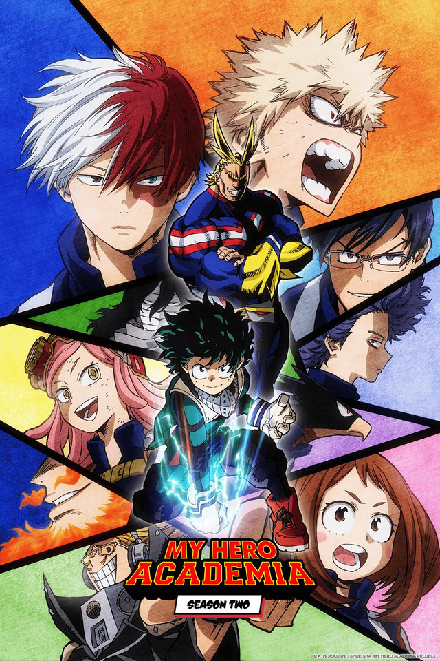
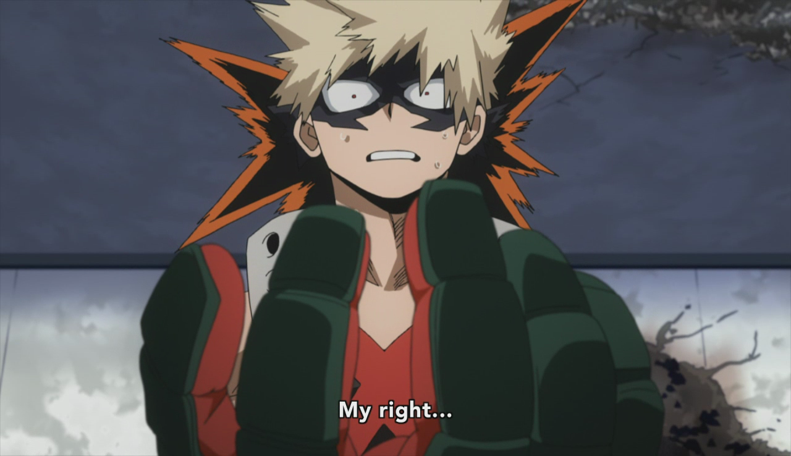

My Hero Academia
On an Earth-like world where people with superpowers known as "Quirks" (個性 Kosei) are the norm, Izuku Midoriya is a regular middle school student who has dreams of one day becoming a Hero despite being bullied by his classmates for not having a Quirk.
